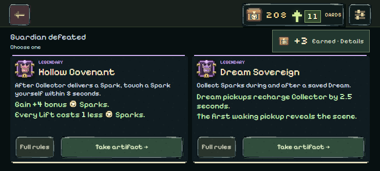
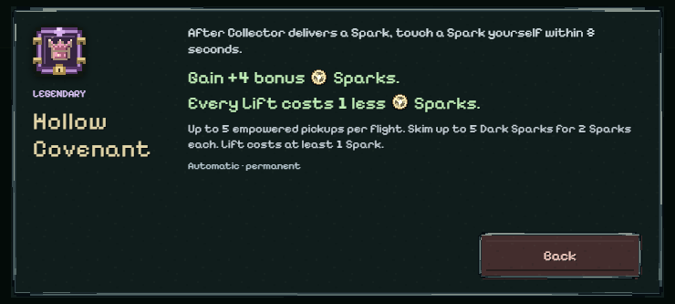
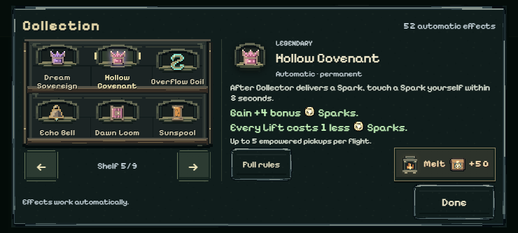
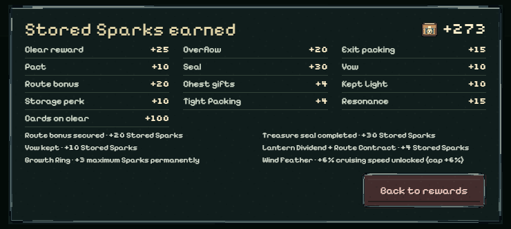
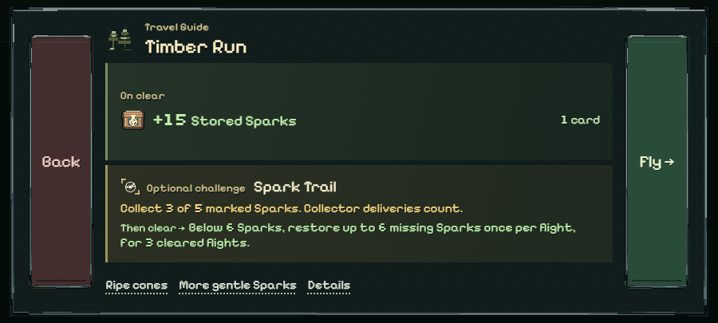
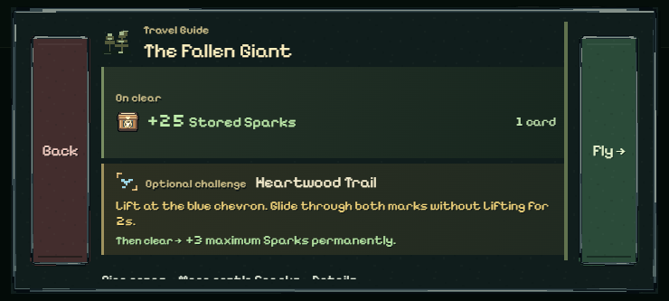
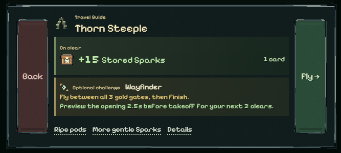
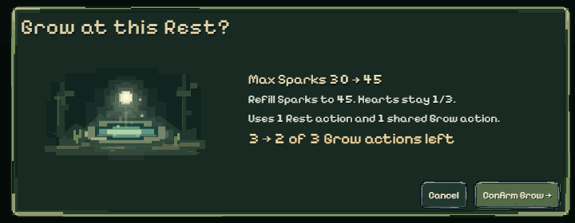
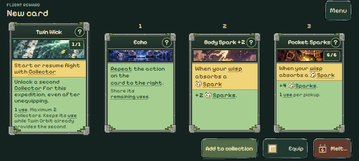

Collector return at normal speed Recorded from the production flight engine with real Spark contact and Collector delivery. Playback starts at 1×. Capture notes and measurements Guardian relic reward 
The two earned relic choices show their essential effects, Full rules, and Take artifact actions at 740 × 333. Open full image Full relic rules 
Hollow Covenant's complete rules open from the reward without losing the current choice. Open full image Relic collection 
The owned collection keeps Hollow Covenant's summary and actions visible on the compact phone layout. Open full image Stored Spark earnings 
The detailed receipt shows all 13 staged reward sources, including card bonuses and resonance. Open full image Optional route challenge 
Spark Trail's preview separates the guaranteed clear reward from the optional marked challenge and its reward. Open full image Permanent route reward 
Heartwood's compact preview explains its permanent maximum Spark reward before entering the route. Open full image Travel Guide within thumb reach 
The real Thorn Steeple Wayfinder sample at 667 × 300 keeps its scrollable reading area between the Back and Fly touch rails. Open full image Grow from the Deck 
Growth Seeds remain in the Deck. Grow reviews the resulting maximum Sparks, refill, and shared action cost before confirmation. Open full image Compare and equip an earned card 
The full new card sits beside the ordered equipped cards. Tap a slot or drag to transfer immediately; the previous card returns to the Deck. Open full image